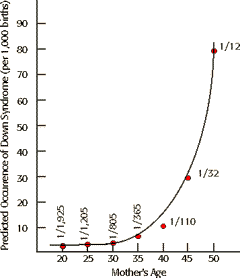

Human Genetics Problem Set
Problem 7 Tutorial: Down's Syndrome
| Which statement about Down's syndrome is false? |
Information about Down's syndrome.
A. The frequency increases dramatically in mothers over the age of 40. B. The cause is a nondisjunction when chromosomes do not separate during the first meiotic division. C. Affected individuals have an extra autosome. D. The long time lag between onset of meiosis in ovarian tissue (during fetal development) and its completion (at ovulation) is most likely the reason for increased incidence in older mothers. E. None, all statements are true. Down syndrome is also known as trisomy 21.
An extra copy of chromosome 21
Individuals with Down's syndrome have either an extra copy of chromosome 21, or a segment of chromosome 21 translocated to another chromosome. The three copies of the genetic information from segments of chromosome 21 results in Down's syndrome.Meiotic errors lead to chromosome aneuploidy. A pair of homologous chromosomes may fail to separate during the first meiotic division. This phenomenon is called nondisjunction. If the paired chromosomes fail to separate during meiosis in the female, then the resulting daughter cells will receive either 2 or no copies of chromosome 21. If the resulting egg with 2 copies of chromosome 21 is fertilized with a normal sperm, the resulting zygote with be trisomy 21.Effect of mother's age |
|
Mothers in their 40's are much more likely to have a child with Down's syndrome than younger mothers. Why is there a correlation with age of the mother? In women, all of the eggs that a woman will produce in her lifetime are developed to meiotic prophase I by the time she is born. The eggs produced during ovulation are as old as the mother. Apparently there is a greater chance for older eggs to have problems that lead to nondisjunction. Expectant mothers aged 35 or older are often advised to have amniocentesis and karyotyping of their unborn children to test for chromosomal aneuploidies. |
 |
| Non-disjunctions can also occur in men during sperm production, and can also lead to chromosomal aneuploidy in their offspring. However in men, sperm are produced throughout the reproductive years, and nondisjuctions are not dramatically age-dependent. |
Down's syndrome baby
Image courtesy of Webpath at the University of Utah
(www-medlib.med.utah.edu/WebPath/webpath.html)


University of Arizona
Revised: November 5, 1998
Contact the Development Team
http://biology.arizona.edu
All contents copyright © 1996-98. All rights reserved.